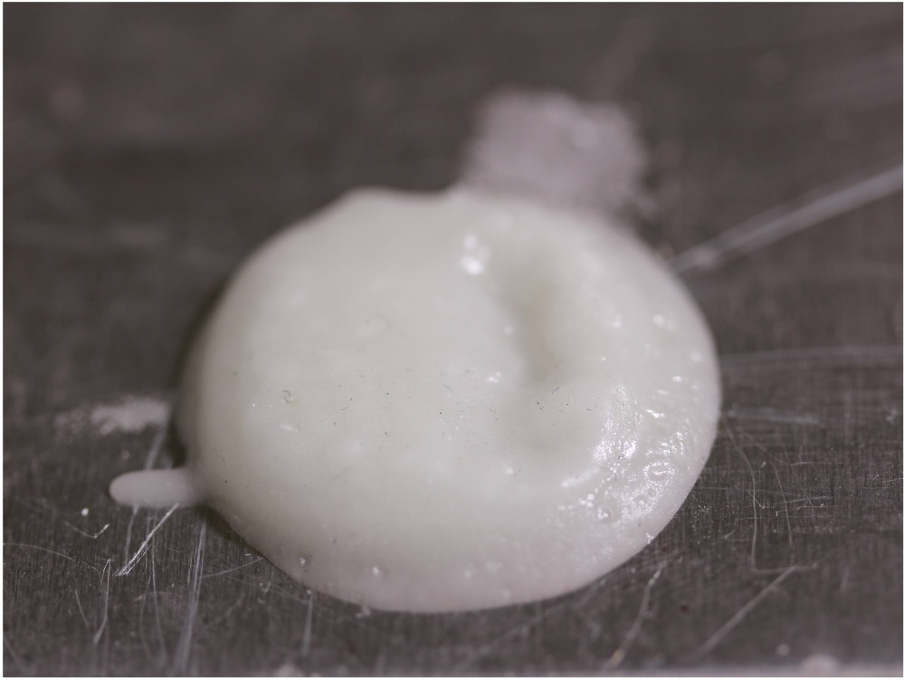
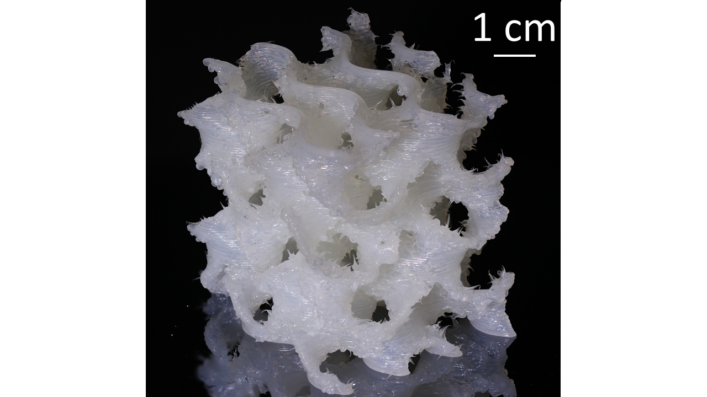

During my tenure at Lawrence Livermore National Laboratory, I worked on resident
and ink forrmulation for 3D printing. Specifically, I worked on dual-curing resins
that leveraged UV-acrylate chemistry to achieve realtime semi-cure of filaments
as they were extruded from the nozzle. This allowed for the printing of complex
structures that would otherwise collapse under their own weight.

No UV printIn-situ UV curing helixFinal UV/heat cured helix

Gyroid3D Benchie (benchmark) High-aspect ratio